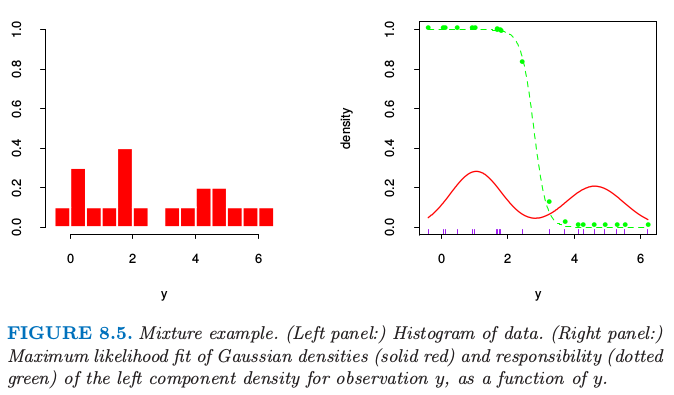
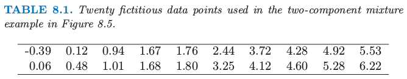
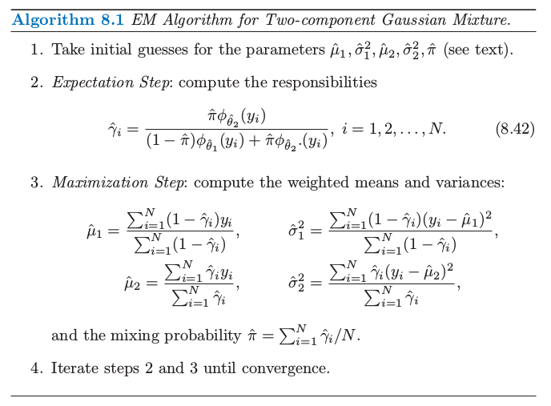
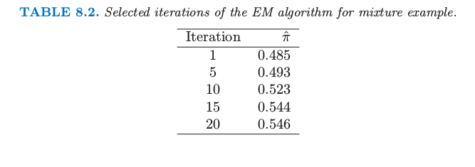
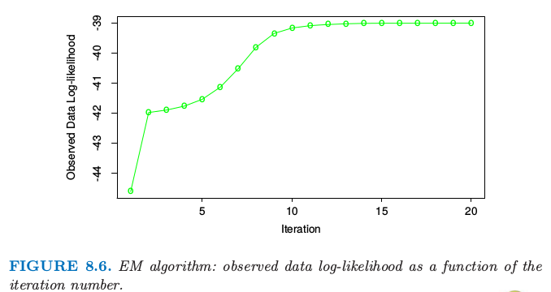
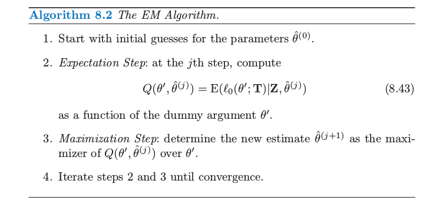
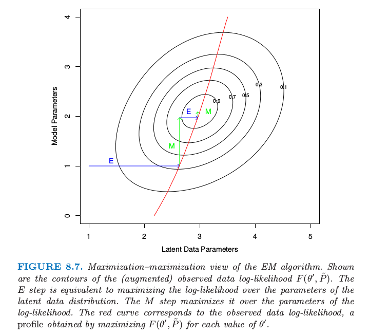

8.5 EM 算法¶
EM 算法是简化复杂极大似然问题的一种很受欢迎的工具。我们首先在一个简单的混合模型中讨论它。
两个组分的混合模型¶
这一节我们描述一个密度估计的简单混合模型，以及对应的求解极大似然估计的 EM 算法。这与贝叶斯推断中的 Gibbs 采样方法有着本质的联系。混合模型在本书其他部分的章节有讨论，特别是 6.8，12.7 和 13.2.3 节。
Gibbs sampling
假设我们需要从 \(\mathbf X=(x_1,x_2,\ldots,x_n)\) 中得到 \(k\) 个样本，联合分布为 \(p(x_1,x_2,\ldots,x_n)\)。
记第 \(i\) 个样本为 \(\mathbf X^{(i)}=(x_1^{(i)},\ldots,x_n^{(i)})\)。我们按下列步骤进行：
以初始值 \(X^{(i)}\) 开始
需要下一个样本，记为 \(X^{(i+1)}\)。因为 \(\mathbf X^{(i+1)}=(x_1^{(i+1)},\ldots,x_n^{(i+1)})\) 是向量，我们需要对向量的每一个组分进行抽样，基于 \(p(x_j^{(i+1)}\mid x_1^{(i+1)},\ldots,x_{j-1}^{(i+1)},x_{j+1}^{(i)},\ldots,x_n^{(i)})\) 的分布对 \(x_j^{(i+1)}\) 抽样.
重复上述步骤 \(k\) 次。
图 8.5 的左图显示了表 8.1 中的 20 个模拟数据的直方图。

图 8.5. 混合模型的例子。（左图：）数据的直方图。（右图：）高斯密度的最大似然拟合（红色实线）和观测值 \(y\) 的左边成分的解释度（绿色点线）作为 \(y\) 的函数。

表 8.1. 图 8.5 中两个组分混合的例子中使用的 20 个模拟数据。
我们想要建立数据点的密度模型，然后由于数据点呈现明显的双峰，高斯分布不是合适的选择。这里似乎有两个潜在的分开的形式，所以我们将 \(Y\) 看成两个正态分布混合的模型：
其中 \(\Delta\in \{0,1\}\)，且 \(\mathrm{Pr}(\Delta =1)=\pi\)。产生过程是很显然的：以概率 \(\pi\) 产生 \(\Delta\in\{0,1\}\)，然后根据输出结果，分配给 \(Y_1\) 或 \(Y_2\)。令 \(\phi_{\theta}(x)\) 记为参数为\(\theta=(\mu,\sigma^2)\) 的正态分布。则 \(Y\) 的密度为
现在假设我们希望通过极大似然估计来拟合图 8.5 中数据的模型。参数为
基于 \(N\) 个训练集的对数概率为
直接对 \(\ell(\theta;\mathbf Z)\) 进行最大化在数值上是很困难的，因为求和项在 \(\log\) 函数里面。然而，这里有一个更简单的方式。我们考虑一个类似 式（ 8.36 ） 中取 0 或 1 的潜变量 \(\Delta_i\)：若 \(\Delta_i=1\) 则 \(Y_i\) 来自模型 2，否则来自模型 1。假设我们已经知道了 \(\Delta_i\) 的值。则对数概率为
Note
而且 \(\mu_1\) 和 \(\sigma_1^2\) 的极大似然估计为 \(\Delta_i=0\) 时样本均值和方差，类似地对于 \(\mu_2\) 和 \(\sigma_2^2\) 的极大似然估计为 \(\Delta_i=1\) 时的样本均值和方差。\(\pi\) 的估计为 \(\Delta_i=1\) 的比例。
因为 \(\Delta_i\) 的值实际上是不知道的，我们用一种迭代方式，替换 式（ 8.40 ） 中的每个 \(\Delta_i\)，它的期望值
也称为模型 2 对于每个观测 \(i\) 的责任 (responsibility)。我们用一种称作 EM 算法（算法 8.1 中给出）的过程来求解这个特殊的高斯混合模型。在期望 (expectation) 这一步，我们对每一个模型的每一个观测做一个软赋值：根据每个模型下训练集点的相对密度，参数的当前估计用来给 responsibilities 赋值。在最大化(maximization) 那一步，对极大似然估计中使用的 responsibilities 进行加权用来更新参数估计。
构造初始的 \(\hat\mu_1\) 和 \(\hat\mu_2\) 的一种很好的方式便是简单地随机选择 \(y_i\) 中的两个值。\(\hat\sigma^2_1\) 和 \(\hat\sigma^2_2\) 都等于整体的样本方差 \(\sum_{i=1}^N(y_i-\bar y)^2/N\)。最大比例的 \(\hat\pi\) 可以从 0.5 开始。
注意到实际中概率的最大值发生在当我们固定一个数据点，换句话说，对于一些 \(i\) 令 \(\hat\mu_1=y_i\)，\(\hat\sigma^2_1=0\)。这给出了无限大的概率，但是这不是一个有用的解。因此实际上我们寻找概率的一个良好的局部最大值，满足 \(\hat\sigma^2_1,\hat\sigma^2_2>0\)。进一步，可以有多个局部最大值满足\(\hat\sigma^2_1,\hat\sigma^2_2>0\)。在我们例子中，我们用一系列不同的初始参数值来运行 EM 算法，所有的都满足 \(\hat\sigma^2_k>0.5\)，然后选择使得概率最大的那个。图 8.6 显示了在最大化对数概率的 EM 算法的过程。表 8.2 显示了在给定迭代次数的 EM 过程下 \(\hat\pi=\sum_i\hat\gamma_i/N\) 是类别 2 中观测值比例的极大似然估计。


表 8.2. 对于混合模型选定的几次迭代的 EM 算法结果

图 8.6. EM算法：观测数据的对数似然关于迭代次数的函数
最后的极大似然估计为
图 8.5 的右图显示了从这个过程估计的混合高斯分布的密度（实心红色曲线），以及 responsibilities（绿色点曲线）。注意到混合在监督学习中也很有用；在 6.7 节我们显示了高斯混合模型怎样导出 radial 基函数的版本。
广义 EM 算法¶
上面的过程是对于特定问题的类别下最大化概率的 EM（或者 Baum-Welch）算法。这些问题的概率最大化是困难的，但是通过运用潜在数据（未观测）增大样本会变得简单。这也称作数据增广。这里潜在数据是模型成员 \(\Delta_i\)。在其它问题中，潜在数据是理应被观测到的实际数据但是缺失了。
算法 8.2 给出了 EM 算法的一般形式。我们的观测数据是 \(\mathbf Z\)，其对数概率 \(\ell(\theta;\mathbf Z)\) 取决于参数 \(\theta\)。潜在数据或者缺失数据为 \(\mathbf Z^m\)，因此完整数据为 \(\mathbf {T=(Z,Z^m)}\)，对数似然函数为 \(\ell_0(\theta;\mathbf T)\)，\(\ell_0\) 基于完整的密度函数。在混合问题中，\((\mathbf{Z,Z^m)=(y,}\Delta)\)，且 \(\ell_0(\theta;\mathbf T)\) 由 式（ 8.40 ） 式给出。

在我们的混合例子中，\(\mathbb{E}(\ell_0(\theta';\mathbf T)\mid \mathbf Z,\hat \theta^{(j)})\) 是将式 式（ 8.40 ） 中的 \(\Delta_i\) 替换成了解释度 \(\hat\gamma_i(\hat \theta)\)。第三步的最大化仅仅是加权均值和方差。
我们现在给出一个为什么一般情况下 EM 算法有用的解释。
因为
我们可以写成
表示成对数似然函数，我们有 \(\ell(\theta';\mathbf Z)=\ell_0(\theta';\mathbf T)-\ell_1(\theta';\mathbf{Z^m\mid Z})\)，其中 \(\ell_1\) 是基于条件密度 \(\mathrm{Pr}(\mathbf{Z^m\mid Z,\theta'})\)。取关于由参数 \(\theta\) 确定的 \(\mathbf{T\mid Z}\) 分布的条件期望有
在最大化那一步，EM 算法最大化关于 \(\theta'\) 的 \(Q(\theta',\theta)\)，而不是实际的目标函数 \(\ell(\theta';\mathbf Z)\)。为什么这样能成功地最大化 \(\ell(\theta';\mathbf Z)\)？注意到 \(R(\theta^*,\theta)\) 是关于 \(\theta^*\) 的对数密度的期望，得到的密度是关于 \(\theta\) 的，因此（由琴生不等式）当 \(\theta^*=\theta\) 时（见练习 8.1）最大化关于 \(\theta^*\) 的函数。
所以如果 \(\theta'\) 最大化 \(Q(\theta',\theta)\)，我们可以看到
因此 EM 迭代不会降低对数似然值。
这个论据也让我们明白在最大化那一步整体最大化不是必要的：我们仅仅需要找到一个值 \(\hat\theta^{(j+1)}\) 使得 \(Q(\theta',\hat\theta^{(j)})\) 关于第一个变量是增的，也就是 \(Q(\hat\theta^{(j+1)},\hat\theta^{(j)}) > Q(\hat\theta^{(j)},\hat\theta^{(j)})\)。这一过程称之为 GEM（广义 EM）算法。EM 算法也可以看成是最小化的过程：见练习 8.7。
EM 作为一个最大化-最大化的过程¶
这里从一个不同的角度来看 EM 过程，看成一个 联合最大化 (joint maximization) 算法。考虑函数
这里 \(\tilde P(\mathbf Z^m)\) 是潜在数据 \(\mathbf Z^m\) 的任意分布。在混合例子中，\(\tilde P(\mathbf Z^m)\) 构成了概率 \(\gamma_i=\mathrm{Pr}(\Delta_i=1\mid \theta,\mathbf Z)\) 的集合。注意到从 式（ 8.46 ） 式看，\(F\) 是观测数据的对数似然函数（在 \(\tilde P(\mathbf Z^m)=\mathrm{Pr}(\mathbf Z^m\mid \mathbf Z,\theta')\) 上取值）。函数 \(F\) 扩大了对数似然的定义域来，使得能够进行最大化。
EM 算法可以看成 \(F\) 关于 \(\theta'\) 和 \(\tilde P(\mathbf Z^m)\) 的联合最大化，通过固定一个变量来最大化另外一个变量。固定 \(\theta'\) 来对 \(\tilde P(\mathbf Z^m)\) 最大化可以证明是
这是在求期望的步骤 E 计算得到的分布，举个例子，如在混合的例子中计算得到的 \((8.42)\)。在 M 步骤时，我们固定 \(\tilde P\) 来对 \(\theta'\) 最大化 \(F(\theta',\tilde P)\)：因为第二项不涉及 \(\theta'\)，所以这与最大化第一项 \(\mathbb{E}_{\tilde P}[\ell_0(\theta';\mathbf T)\mid \mathbf Z,\theta]\) 是一样的。
最后，因为当 \(\tilde P(\mathbf Z^m)=\mathrm{Pr}(\mathbf Z^m\mid \mathbf Z,\theta')\) 时，\(F(\theta',\tilde P)\) 和观测数据的对数似然函数是一致的，对前者的最大化也实现了对后者的最大化。图 8.7 展现了这一过程的示意图。

图 8.7. EM 算法的最大化-最大化角度。图中画出了（增广）观测数据对数似然函数 \(F(\theta',\tilde P)\) 的等高线。步骤 E 等价于在潜在数据分布的参数上最大化对数似然函数。步骤 M 在对数似然参数上进行最大化。红色曲线对应观测数据的对数似然函数，这是对每个 \(\theta'\) 值进行最大化 \(F(\theta',\tilde P)\) 得到的曲线。
EM 算法的这个角度导出了 轮换最大化过程 (alternative maximization procedure)。举个例子，虽然不需要一次性对所有潜在数据参数进行最大化，但是可以每次最大化其中的一个，通过在步骤 M 来 轮换 (alternate)。
!!! note “weiya 注” 有点类似于 坐标轮换 (univariate search)，关于坐标轮换及其其他优化方法的介绍，可以参见nlpm。